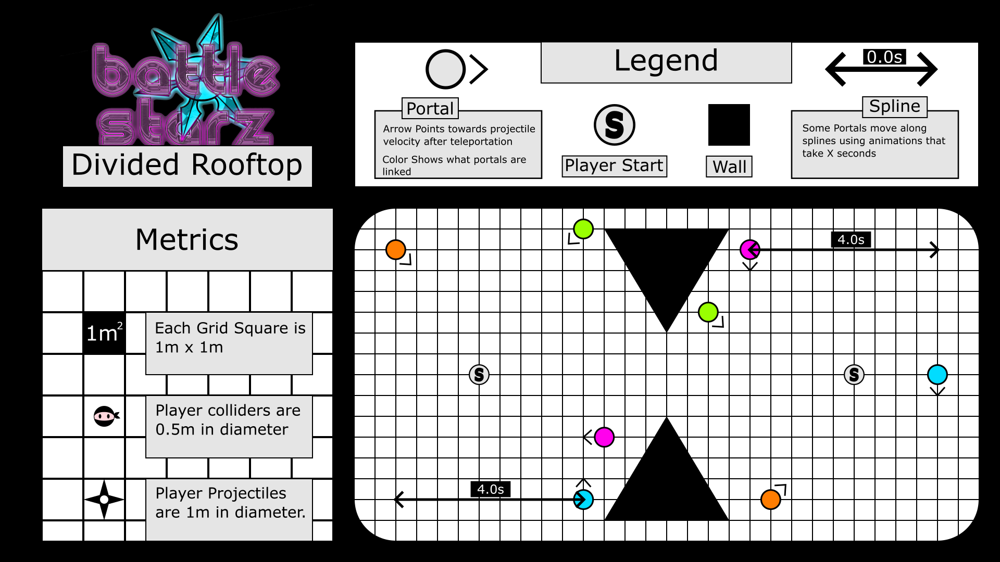

Battle Starz
Barttle Starz was created by myself and four other students for a school project at Vancouver Film School. For this project I took on the roles of project manager and level designer.
Battle Arena
The core mechanics of battle starz are throwing shurikens and teleporting shurikens to perform trick shots that can catch your opponent off guard. but after we set up our game's gym we quickly found that because they added an extra step to hitting your opponent players didn't feel an inherit incentive to use them.
So when I set out to make the levels for the game I designed levels that would push players to interact with teleporting shurikens more.

This is the layout for one of the levels I made. For this level I tried to devide the two starting positions so the players would stay on opposite sides of the arena since trying to run past the divide would put them through a choke point and make them an easy target. but this also gave them great cover from direct shots pushing them to use portals to hit their opponent.

This ended up having the intended effect while not being so heavy handed that you couldn't run at your opponent and make them sweat.
Collaborators
Programmer Nic Seymour
Artist Steven
UI Programmer Nick Perott
QA